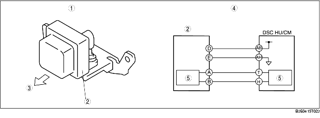

COMBINED SENSOR CONSTRUCTION/OPERATION
B3E041543770T02
• The combined sensor is located in the floor under the front seat (RH).
• The combined sensor, which integrates the yaw rate and lateral-G sensors, detects and calculates the vehicle yaw and lateral-G rates, and transmits this to the DSC HU/CM via special CAN lines between the sensor and module.
• The yaw rate sensor detects a Coriolis force created by, and in proportion to, the rotation speed of a rotating tuning fork.
• The lateral-G sensor detects an inertial force created by, and in proportion to, a G-force acting on a silicon detection component.
-
Note
-
• Coriolis force: When an object on a rotating disc attempts to move toward the center of the disc, force is produced at a right angle to the intended path of travel of the object. This results in the direction of movement being unchanged from its original point of departure, and the object does not reach the center. When looking at this effect from outside the disc, it appears as if a force is deflecting the object away from the center. This appearance of force is called a Coriolis force, and the object actually advances in a straight course.

.
|
1
|
External view
|
|
2
|
Combined sensor
|
|
3
|
Vehicle front
|
|
4
|
System wiring diagram
|
|
5
|
CAN driver
|